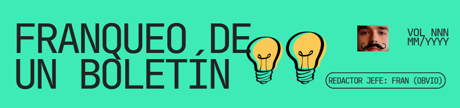

Listado de Boletines
¿Quieres colaborar?Boletín VOL IX
1 Abril 2026
Volumen de marzo. No te lo pierdas y léelo ya.
Con colaboradores especiales.
Ver DiseñoBoletín VOL VIII
1 Marzo 2026
Volumen de febrero de 2026, donde se habla del sobao de masa de Joselín, el movimiento anarquista comparado con la situación de los animales domésticos, lo que significa ser del Racing y la magia del carnaval. Con colaboradores invitados.
Ver DiseñoBoletín VOL VII - ESTADO DEL FRAN
1 Febrero 2026
Volumen de enero de 2026, donde se resume mi año 2025, separándolo en distintas categorías, pero básicamente centrándose en lecturas, proyectos creativos y deportes.
Ver DiseñoBoletín VOL V
23 Octubre 2025
Volumen de septiembre de 2025, donde resumo los sucesos importantes ocurridos durante el mes. Principalmente el torneo de basket 3x3 y la celebración de mi cumpleaños.
Ver DiseñoBoletín VOL FRAN
11 Julio 2025
Volumen de junio de 2025, una edición especial donde me centro en mí. En concreto cuento los inicios del FRAN-BASKET y anuncio oficialmente mi libro "Crónica de un huracán".
Ver DiseñoBoletín IV
6 Junio 2026
Volumen de mayo de 2025, donde reseño "La familia de Pascual Duarte", y un colaborador invitado nos habla sobre un juego japonés de la SNES, "Chrono Trigger".
Ver DiseñoBoletín SJ
23 Abril 2025
Volumen de abril de 2025, edición especial por la festividad de Sant Jordi (el día del libro), donde hablo sobre "Cien años de soledad" y explico brevemente la propia historia del día del libro.
Ver DiseñoBoletín III
2 Abril 2025
Volumen de marzo de 2025, donde hablo de "Mistborn", "Bladerunner" y "Pachangas FRAN-BASKET".
Ver DiseñoBoletín II
2 Marzo 2025
Volumen de febrero de 2025, donde hablo de "Señora de rojo sobre fondo gris", "La favorite" y una breve explicación de la historia de la Isla de Mouro.
Ver DiseñoBoletín I
1 Febrero 2025
Volumen inaugural del boletín, de enero de 2025. En él hablo de "El coronel no tiene quién le escriba". "La princesa Mononoke" y hago un resumen breve sobre el penalty córner en hockey hierba.
Ver Diseño